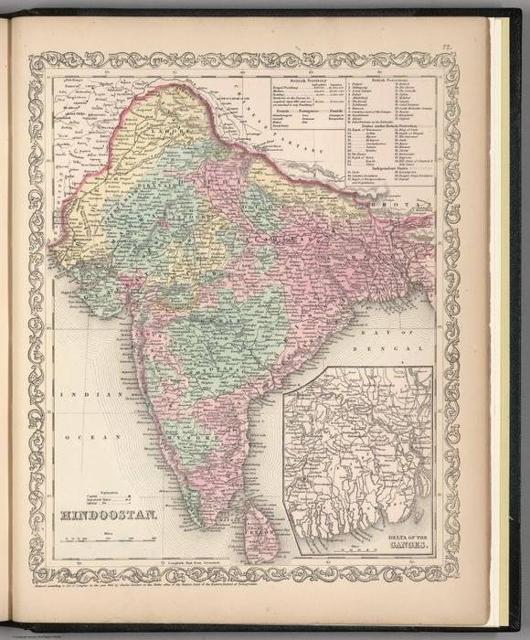
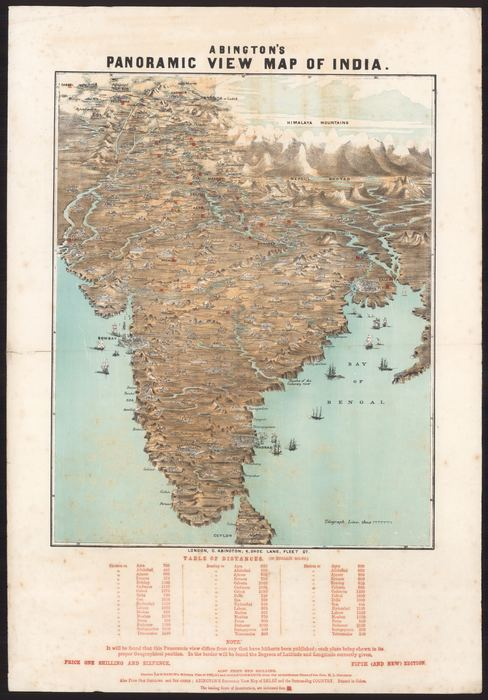
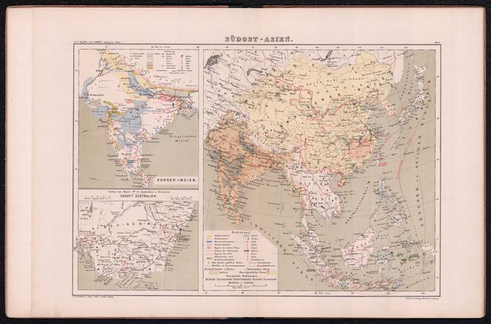
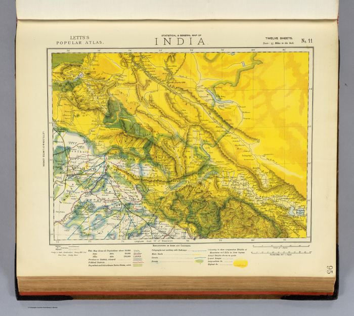
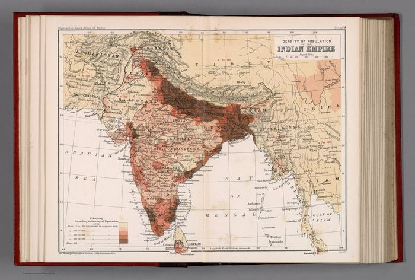
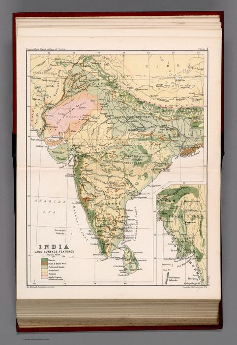

Room 05
Administered Empire and Victorian Atlas
At the height of empire the gaze turns analytic. India is no longer merely outlined but dissected – into presidencies and districts, densities of population, lines of rail and telegraph. The thematic maps of high-Victorian cartography render the subcontinent as an object of administration and knowledge: something to be counted, coloured and managed.
 Northern Punjab, Kashmir, Ladak and Little Tibet1846
Northern Punjab, Kashmir, Ladak and Little Tibet1846 The Overland Route to India1851
The Overland Route to India1851 Southern India, including the Presidencies of Bombay and Madras1851
Southern India, including the Presidencies of Bombay and Madras1851 India XI: Punjab, Lahore and Ladakh1856
India XI: Punjab, Lahore and Ladakh1856
Hindoostan1857
Abington’s Panoramic View of India1858
Südost-Asien1866
India No. 11: Statistical and General Map1883
Density of Population of the Indian Empire1893
India: Land-Surface Features1893Historical Map of British India since A.D. 17511901